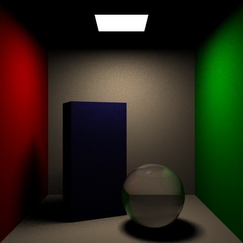
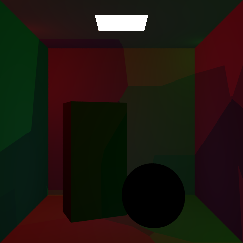

For this final project, I decided to participate in a "Rendering Competition" style project to render global illumination and caustics by implementing photon mapping. For this project, I referred to this paper: Photon Mapping for Realistic Image Synthesis and the video instruction: Photon Mapping Video Tutorial. I used the scene provided with the assignments and the skeleton code with Embree. First, I implemented refraction to render glass materials. The first photo shows direct light rendering, and the other two photos show indirect light using photon mapping. However, I couldn't figure out the indirect light completely. It seems pretty dim, and the caustics don't render correctly.
 